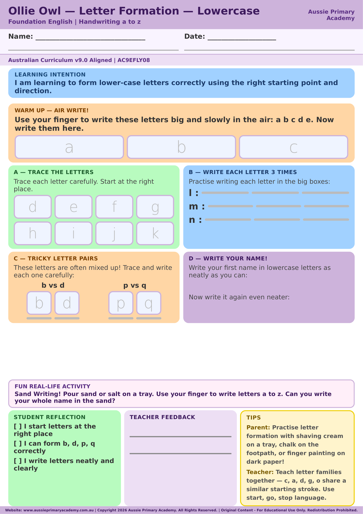

Foundation · Writing · Free Printable
Letter Formation: Lowercase (Writing Practice)
Practise correct lowercase letter formation with guided tracing and handwriting lines.
Worksheet Preview

Learning Intention
Students practise forming lowercase letters with consistent starting points, direction and size.
Australian Curriculum
Supports Foundation Writing learning. (AC9EFLY08)
Skills Practised
- Lowercase letter formation
- Handwriting control
- Consistent size and direction
About This Worksheet
Early handwriting practice helps children develop consistent letter shapes and controlled pencil movements. Repeated practice with clear starting points can make letter formation more automatic, leaving more attention available for writing words and ideas.
I Can Checklist
- I can start each letter in the right place.
- I can form lowercase letters carefully.
- I can keep my letters a consistent size.
How to Use It
Model the letter first, showing where to start and which direction to move. Let the child trace or copy the example, then practise independently. Encourage slow, controlled movements rather than rushing through the page.
Parent Tip
Keep handwriting practice short and regular. If a letter is difficult, model it again and let your child try a few careful repetitions before moving on.